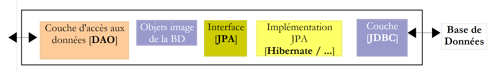
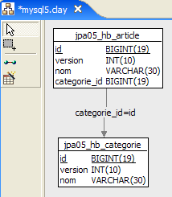
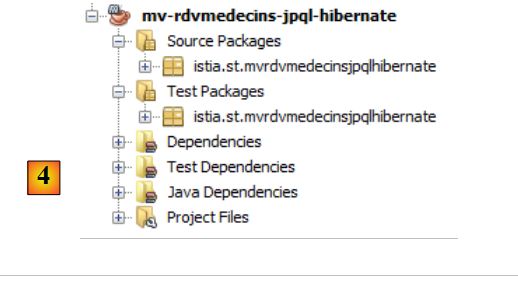

4. JPA en résumé
Nous nous proposons d'introduire JPA (Java Persistence API) avec quelques exemples. JPA est développé dans le cours :
- Persistance Java 5 par la pratique : [http://tahe.developpez.com/java/jpa] - donne les outils pour construire la couche d'accès aux données avec JPA
4.1. La place de JPA dans une architecture en couches
Le lecteur est invité à relire le début de ce document (paragraphe 2) qui explique le rôle de la couche JPA dans une architecture en couches. La couche JPA s'insère dans les couches d'acès aux données :
 |
La couche [DAO] dialogue avec la spécification JPA. Quelque soit le produit qui implémente celle-ci, l'interface de la couche JPA présentée à la couche [DAO] reste la même. Nous présentons dans la suite quelques exemples tirés de [ref1] qui nous permettront de construire notre propre couche JPA.
4.2. JPA - exemples
4.2.1. Exemple 1 - Représentation objet d'une table unique
4.2.1.1. La table [personne]
Considérons une base de données ayant une unique table [personne] dont le rôle est de mémoriser quelques informations sur des individus :
 |
clé primaire de la table | |
version de la ligne dans la table. A chaque fois que la personne est modifiée, son n° de version est incrémenté. | |
nom de la personne | |
son prénom | |
sa date de naissance | |
entier 0 (non marié) ou 1 (marié) | |
nombre d'enfants de la personne |
4.2.1.2. L'entité [Personne]
Nous nous plaçons dans l'environnement d'exécution suivant :
 |
La couche JPA [5] doit faire un pont entre le monde relationnel de la base de données [7] et le monde objet [4] manipulé par les programmes Java [3]. Ce pont est fait par configuration et il y a deux façons de le faire :
- avec des fichiers XML. C'était quasiment l'unique façon de faire jusqu'à l'avènement du JDK 1.5
- avec des annotations Java depuis le JDK 1.5
Dans ce document, nous utiliserons exclusivement la seconde méthode.
L'objet [Personne] image de la table [personne] présentée précédemment pourrait être le suivant :
...
@SuppressWarnings("unused")
@Entity
@Table(name="Personne")
public class Personne implements Serializable{
@Id
@Column(name = "ID", nullable = false)
@GeneratedValue(strategy = GenerationType.AUTO)
private Integer id;
@Column(name = "VERSION", nullable = false)
@Version
private int version;
@Column(name = "NOM", length = 30, nullable = false, unique = true)
private String nom;
@Column(name = "PRENOM", length = 30, nullable = false)
private String prenom;
@Column(name = "DATENAISSANCE", nullable = false)
@Temporal(TemporalType.DATE)
private Date datenaissance;
@Column(name = "MARIE", nullable = false)
private boolean marie;
@Column(name = "NBENFANTS", nullable = false)
private int nbenfants;
// constructeurs
public Personne() {
}
public Personne(String nom, String prenom, Date datenaissance, boolean marie,
int nbenfants) {
setNom(nom);
setPrenom(prenom);
setDatenaissance(datenaissance);
setMarie(marie);
setNbenfants(nbenfants);
}
// toString
public String toString() {
...
}
// getters and setters
...
}
La configuration se fait à l'aide d'annotations Java @Annotation. Les annotations Java sont soit exploitées par le compilateur, soit par des outils spécialisés au moment de l'exécution. En-dehors de l'annotation de la ligne 3 destinée au compilateur, toutes les annotations sont ici destinées à l'implémentation JPA utilisée, Hibernate ou Toplink. Elles seront donc exploitées à l'exécution. En l'absence des outils capables de les interpréter, ces annotations sont ignorées. Ainsi la classe [Personne] ci-dessus pourrait être exploitée dans un contexte hors JPA.
Il faut distinguer deux cas d'utilisation des annotations JPA dans une classe C associée à une table T :
- la table T existe déjà : les annotations JPA doivent alors reproduire l'existant (nom et définition des colonnes, contraintes d'intégrité, clés étrangères, clés primaires, ...)
- la table T n'existe pas et elle va être créée d'après les annotations trouvées dans la classe C.
Le cas 2 est le plus facile à gérer. A l'aide des annotations JPA, nous indiquons la structure de la table T que nous voulons. Le cas 1 est souvent plus complexe. La table T a pu être construite, il y a longtemps, en-dehors de tout contexte JPA. Sa structure peut alors être mal adaptée au pont relationnel / objet de JPA. Pour simplifier, nous nous plaçons dans le cas 2 où la table T associée à la classe C va être créée d'après les annotations JPA de la classe C.
Commentons les annotations JPA de la classe [Personne] :
- ligne 4 : l'annotation @Entity est la première annotation indispensable. Elle se place avant la ligne qui déclare la classe et indique que la classe en question doit être gérée par la couche de persistance JPA. En l'absence de cette annotation, toutes les autres annotations JPA seraient ignorées.
- ligne 5 : l'annotation @Table désigne la table de la base de données dont la classe est une représentation. Son principal argument est name qui désigne le nom de la table. En l'absence de cet argument, la table portera le nom de la classe, ici [Personne]. Dans notre exemple, l'annotation @Table est donc superflue.
- ligne 8 : l'annotation @Id sert à désigner le champ dans la classe qui est image de la clé primaire de la table. Cette annotation est obligatoire. Elle indique ici que le champ id de la ligne 11 est l'image de la clé primaire de la table.
- ligne 9 : l'annotation @Column sert à faire le lien entre un champ de la classe et la colonne de la table dont le champ est l'image. L'attribut name indique le nom de la colonne dans la table. En l'absence de cet attribut, la colonne porte le même nom que le champ. Dans notre exemple, l'argument name n'était donc pas obligatoire. L'argument nullable=false indique que la colonne associée au champ ne peut avoir la valeur NULL et que donc le champ doit avoir nécessairement une valeur.
- ligne 10 : l'annotation @GeneratedValue indique comment est générée la clé primaire lorsqu'elle est générée automatiquement par le SGBD. Ce sera le cas dans tous nos exemples. Ce n'est pas obligatoire. Ainsi notre personne pourrait avoir un n° étudiant qui servirait de clé primaire et qui ne serait pas généré par le SGBD mais fixé par l'application. Dans ce cas, l'annotation @GeneratedValue serait absente. L'argument strategy indique comment est générée la clé primaire lorsqu'elle est générée par le SGBD. Les SGBD n'ont pas tous la même technique de génération des valeurs de clé primaire. Par exemple :
utilise un générateur de valeurs appelée avant chaque insertion | |
le champ clé primaire est défini comme ayant le type Identity. On a un résultat similaire au générateur de valeurs de Firebird, si ce n'est que la valeur de la clé n'est connue qu'après l'insertion de la ligne. | |
utilise un objet appelé SEQUENCE qui là encore jouele rôle d'un générateur de valeurs |
La couche JPA doit générer des ordres SQL différents selon les SGBD pour créer le générateur de valeurs. On lui indique par configuration le type de SGBD qu'elle a à gérer. Du coup, elle peut savoir quelle est la stratégie habituelle de génération de valeurs de clé primaire de ce SGBD. L'argument strategy = GenerationType.AUTO indique à la couche JPA qu'elle doit utiliser cette stratégie habituelle. Cette technique a fonctionné dans tous les exemples de ce document pour les sept SGBD utilisés.
- ligne 14 : l'annotation @Version désigne le champ qui sert à gérer les accès concurrents à une même ligne de la table.
Pour comprendre ce problème d'accès concurrents à une même ligne de la table [personne], supposons qu'une application web permette la mise à jour d'une personne et examinons le cas suivant :
Au temps T1, un utilisateur U1 entre en modification d’une personne P. A ce moment, le nombre d’enfants est 0. Il passe ce nombre à 1 mais avant qu’il ne valide sa modification, un utilisateur U2 entre en modification de la même personne P. Puisque U1 n’a pas encore validé sa modification, U2 voit sur son écran le nombre d’enfants à 0. U2 passe le nom de la personne P en majuscules. Puis U1 et U2 valident leurs modifications dans cet ordre. C’est la modification de U2 qui va gagner : dans la base, le nom va passer en majuscules et le nombre d’enfants va rester à zéro alors même que U1 croit l’avoir changé en 1.
La notion de version de personne nous aide à résoudre ce problème. On reprend le même cas d’usage :
Au temps T1, un utilisateur U1 entre en modification d’une personne P. A ce moment, le nombre d’enfants est 0 et la version V1. Il passe le nombre d’enfants à 1 mais avant qu’il ne valide sa modification, un utilisateur U2 entre en modification de la même personne P. Puisque U1 n’a pas encore validé sa modification, U2 voit le nombre d’enfants à 0 et la version à V1. U2 passe le nom de la personne P en majuscules. Puis U1 et U2 valident leurs modifications dans cet ordre. Avant de valider une modification, on vérifie que celui qui modifie une personne P détient la même version que la personne P actuellement enregistrée. Ce sera le cas de l’utilisateur U1. Sa modification est donc acceptée et on change alors la version de la personne modifiée de V1 à V2 pour noter le fait que la personne a subi un changement. Lors de la validation de la modification de U2, on va s’apercevoir que U2 détient une version V1 de la personne P, alors qu’actuellement la version de celle-ci est V2. On va alors pouvoir dire à l’utilisateur U2 que quelqu’un est passé avant lui et qu’il doit repartir de la nouvelle version de la personne P. Il le fera, récupèrera une personne P de version V2 qui a maintenant un enfant, passera le nom en majuscules, validera. Sa modification sera acceptée si la personne P enregistrée a toujours la version V2. Au final, les modifications faites par U1 et U2 seront prises en compte alors que dans le cas d’usage sans version, l’une des modifications était perdue.
La couche [DAO] de l'application cliente peut gérer elle-même la version de la classe [Personne]. A chaque fois qu'il y aura une modification d'un objet P, la version de cet objet sera incrémentée de 1 dans la table. L'annotation @Version permet de transférer cette gestion à la couche JPA. Le champ concerné n'a nul besoin de s'appeler version comme dans l'exemple. Il peut porter un nom quelconque.
Les champs correspondant aux annotations @Id et @Version sont des champs présents à cause de la persistance. On n'en aurait pas besoin si la classe [Personne] n'avait pas besoin d'être persistée. On voit donc qu'un objet n'a pas la même représentation selon qu'il a besoin ou non d'être persisté.
- ligne 17 : de nouveau l'annotation @Column pour donner des informations sur la colonne de la table [personne] associée au champ nom de la classe Personne. On trouve ici deux nouveaux arguments :
- unique=true indique que le nom d'une personne doit être unique. Cela va se traduire dans la base de données par l'ajout d'une contrainte d'unicité sur la colonne NOM de la table [personne].
- length=30 fixe à 30 le nombre de caractères de la colonne NOM. Cela signifie que le type de cette colonne sera VARCHAR(30).
- ligne 24 : l'annotation @Temporal sert à indiquer quel type SQL donner à une colonne / champ de type date / heure. Le type TemporalType.DATE désigne une date seule sans heure associée. Les autres types possibles sont TemporalType.TIME pour coder une heure et TemporalType.TIMESTAMP pour coder une date avec heure.
Commentons maintenant le reste du code de la classe [Personne] :
- ligne 6 : la classe implémente l'interface Serializable. La sérialisation d'un objet consiste à le transformer en une suite de bits. La désérialisation est l'opération inverse. La sérialisation / désérialisation est notamment utilisée dans les applications client / serveur où des objets sont échangés via le réseau. Les applications clientes ou serveur sont ignorantes de cette opération qui est faite de façon transparente par les JVM. Pour qu'elle soit possible, il faut cependant que les classes des objets échangés soit " taguées " avec le mot clé Serializable.
- ligne 37 : un constructeur de la classe. On notera que les champs id et version ne font pas partie des paramètres. En effet, ces deux champs sont gérés par la couche JPA et non par l'application.
- lignes 51 et au-delà : les méthodes get et set de chacun des champs de la classe. Il est à noter que les annotations JPA peuvent être placées sur les méthodes get des champs au lieu d'être placées sur les champs eux-mêmes. La place des annotations indique le mode que doit utiliser JPA pour accéder aux champs :
- si les annotations sont mises au niveau champ, JPA accèdera directement aux champs pour les lire ou les écrire
- si les annotations sont mises au niveau get, JPA accèdera aux champs via les méthodes get / set pour les lire ou les écrire
C'est la position de l'annotation @Id qui fixe la position des annotations JPA d'une classe. Placée au niveau champ, elle indique un accès direct aux champs et placée au niveau get, un accès aux champs via les get et set. Les autres annotations doivent alors être placées de la même façon que l'annotation @Id.
4.2.2. Configuration de la couche JPA
Les tests de la couche JPA peuvent être faits avec l'architecture suivante :
 |
- en [7] : la base de données qui sera générée à partir des annotations de l'entité [Personne] ainsi que de configurations complémentaires faites dans un fichier appelé [persistence.xml]
- en [5, 6] : une couche JPA implémentée par Hibernate
- en [4] : l'entité [Personne]
- en [3] : un programme de test de type console
La configuration de la couche JPA est assurée par le fichier [META-INF/persistence.xml] :
 |
A l'exécution, le fichier [META-INF/persistence.xml] est cherché dans le Classpath de l'application.
Examinons la configuration de la couche JPA faite dans le fichier [persistence.xml] de notre projet :
<?xml version="1.0" encoding="UTF-8"?>
<persistence version="1.0" xmlns="http://java.sun.com/xml/ns/persistence">
<persistence-unit name="jpa" transaction-type="RESOURCE_LOCAL">
<!-- provider -->
<provider>org.hibernate.ejb.HibernatePersistence</provider>
<properties>
<!-- Classes persistantes -->
<property name="hibernate.archive.autodetection" value="class, hbm" />
<!-- logs SQL
<property name="hibernate.show_sql" value="true"/>
<property name="hibernate.format_sql" value="true"/>
<property name="use_sql_comments" value="true"/>
-->
<!-- connexion JDBC -->
<property name="hibernate.connection.driver_class" value="com.mysql.jdbc.Driver" />
<property name="hibernate.connection.url" value="jdbc:mysql://localhost:3306/jpa" />
<property name="hibernate.connection.username" value="jpa" />
<property name="hibernate.connection.password" value="jpa" />
<!-- création automatique du schéma -->
<property name="hibernate.hbm2ddl.auto" value="create" />
<!-- Dialecte -->
<property name="hibernate.dialect" value="org.hibernate.dialect.MySQL5InnoDBDialect" />
<!-- propriétés DataSource c3p0 -->
<property name="hibernate.c3p0.min_size" value="5" />
<property name="hibernate.c3p0.max_size" value="20" />
<property name="hibernate.c3p0.timeout" value="300" />
<property name="hibernate.c3p0.max_statements" value="50" />
<property name="hibernate.c3p0.idle_test_period" value="3000" />
</properties>
</persistence-unit>
</persistence>
Pour comprendre cette configuration, il nous faut revenir sur l'architecture de l'accès aux données de notre application :
 |
- le fichier [persistence.xml] va configurer les couches [4, 5, 6]
- [4] : implémentation Hibernate de JPA
- [5] : Hibernate accède à la base de données via un pool de connexions. Un pool de connexions est une réserve de connexions ouvertes avec le SGBD. Un SGBD est accédé par de multiples utilisateurs alors même que pour des raisons de performances, il ne peut dépasser un nombre limite N de connexions ouvertes simultanément. Un code bien écrit ouvre une connexion avec le SGBD un minimum de temps : il émet des ordres SQL et ferme la connexion. Il va faire cela de façon répétée, à chaque fois qu'il a besoin de travailler avec la base. Le coût d'ouverture / fermeture d'une connexion n'est pas négligeable et c'est là qu'intervient le pool de connexions. Celui-ci va au démarrage de l'application ouvrir N1 connexions avec le SGBD. C'est à lui que l'application demandera une connexion ouverte lorsqu'elle en aura besoin. Celle-ci sera rendue au pool dès que l'application n'en aura plus besoin, de préférence le plus vite possible. La connexion n'est pas fermée et reste disponible pour l'utilisateur suivant. Un pool de connexions est donc un système de partage de connexions ouvertes.
- [6] : le pilote JDBC du SGBD utilisé
Maintenant voyons comment le fichier [persistence.xml] configure les couches [4, 5, 6] ci-dessus :
- ligne 2 : la balise racine du fichier XML est <persistence>.
- ligne 3 : <persistence-unit> sert à définir une unité de persistance. Il peut y avoir plusieurs unités de persistance. Chacune d'elles a un nom (attribut name) et un type de transactions (attribut transaction-type). L'application aura accès à l'unité de persistance via le nom de celle-ci, ici jpa. Le type de transaction RESOURCE_LOCAL indique que l'application gère elle-même les transactions avec le SGBD. Ce sera le cas ici. Lorsque l'application s'exécute dans un conteneur EJB3, elle peut utiliser le service de transactions de celui-ci. Dans ce cas, on mettra transaction-type=JTA (Java Transaction API). JTA est la valeur par défaut lorsque l'attribut transaction-type est absent.
- ligne 5 : la balise <provider> sert à définir une classe implémentant l'interface [javax.persistence.spi.PersistenceProvider], interface qui permet à l'application d'initialiser la couche de persistance. Parce qu'on utilise une implémentation JPA / Hibernate, la classe utilisée ici est une classe d'Hibernate.
- ligne 6 : la balise <properties> introduit des propriétés propres au provider particulier choisi. Ainsi selon qu'on a choisi Hibernate, Toplink, Kodo, ... on aura des propriétés différentes. Celles qui suivent sont propres à Hibernate.
- ligne 8 : demande à Hibernate d'explorer le classpath du projet pour y trouver les classes ayant l'annotation @Entity afin de les gérer. Les classes @Entity peuvent également être déclarées par des balises <class>nom_de_la_classe</class>, directement sous la balise <persistence-unit>. C'est ce que nous ferons avec le provider JPA / Toplink.
- les lignes 10-12, ici mises en commentaires configurent les logs console d'Hibernate :
- ligne 10 : pour afficher ou non les ordres SQL émis par Hibernate sur le SGBD. Ceci est très utile lors de la phase d'apprentissage. A cause du pont relationnel / objet, l'application travaille sur des objets persistants sur lesquels elle applique des opérations de type [persist, merge, remove]. Il est très intéressant de savoir quels sont les ordres SQL réellement émis sur ces opérations. En les étudiant, peu à peu on en vient à deviner les ordres SQL qu'Hibernate va générer lorsqu'on fait telle opération sur les objets persistants et le pont relationnel / objet commence à prendre consistance dans l'esprit.
- ligne 11 : les ordres SQL affichés sur la console peuvent être formatés joliment pour rendre leur lecture plus aisée
- ligne 12 : les ordres SQL affichés seront de plus commentés
- les lignes 15-19 définissent la couche JDBC (couche [6] dans l'architecture) :
- ligne 15 : la classe du pilote JDBC du SGBD, ici MySQL5
- ligne 16 : l'url de la base de données utilisée
- lignes 17, 18 : l'utilisateur de la connexion et son mot de passe
- ligne 22 : Hibernate a besoin de connaître le SGBD qu'il a en face de lui. En effet, les SGBD ont tous des extensions SQL propriétaires, une façon propre de gérer la génération automatique des valeurs d'une clé primaire, ... qui font qu'Hibernate a besoin de connaître le SGBD avec qui il travaille afin de lui envoyer les ordres SQL que celui-ci comprendra. [MySQL5InnoDBDialect] désigne le SGBD MySQL5 avec des tables de type InnoDB qui supportent les transactions.
- les lignes 24-28 configurent le pool de connexions c3p0 (couche [5] dans l'architecture) :
- lignes 24, 25 : le nombre minimal (défaut 3) et maximal de connexions (défaut 15) dans le pool. Le nombre initial de connexions par défaut est 3.
- ligne 26 : durée maximale en milli-secondes d'attente d'une demande de connexion de la part du client. Passé ce délai, c3p0 lui renverra une exception.
- ligne 27 : pour accéder à la BD, Hibernate utilise des ordres SQL préparés (PreparedStatement) que c3p0 peut mettre en cache. Cela signifie que si l'application demande une seconde fois un ordre SQL préparé déjà en cache, celui-ci n'aura pas besoin d'être préparé (la préparation d'un ordre SQL a un coût) et celui qui est en cache sera utilisé. Ici, on indique le nombre maximal d'ordres SQL préparés que le cache peut contenir, toutes connexions confondues (un ordre SQL préparé appartient à une connexion).
- ligne 28 : fréquence de vérification en milli-secondes de la validité des connexions. Une connexion du pool peut devenir invalide pour diverses raisons (le pilote JDBC invalide la connexion parce qu'elle est trop longue, le pilote JDBC présente des " bugs ", ...).
- ligne 20 : on demande ici, qu'à l'initialisation de l'unité de persistance, la base de données image des objets @Entity soit générée. Hibernate a désormais tous les outils pour émettre les ordres SQL de génération des tables de la base de données :
- la configuration des objets @Entity lui permet de connaître les tables à générer
- les lignes 15-18 et 24-28 lui permettent d'obtenir une connexion avec le SGBD
- la ligne 22 lui permet de savoir quel dialecte SQL utiliser pour générer les tables
Ainsi le fichier [persistence.xml] utilisé ici recrée une base neuve à chaque nouvelle exécution de l'application. Les tables sont recréées (create table) après avoir été détruites (drop table) si elles existaient. On notera que ce n'est évidemment pas à faire avec une base en production...
4.2.3. Exemple 2 : relation un-à-plusieurs
4.2.3.1. Le schéma de la base de données
1  | 2 |
- en [1], la base de données et en [2], sa DDL (MySQL5)
Un article A(id, version, nom) appartient exactement à une catégorie C(id, version, nom). Une catégorie C peut contenir 0, 1 ou plusieurs articles. On a une relation un-à-plusieurs (Categorie -> Article) et la relation inverse plusieurs-à-un (Article -> Categorie). Cette relation est matérialisée par la clé étrangère que possède la table [article] sur la table [categorie] (lignes 24-28 de la DDL).
4.2.3.2. Les objets @Entity représentant la base de données
Un article est représenté par l'@Entity [Article] suivante :
package entites;
...
@Entity
@Table(name="jpa05_hb_article")
public class Article implements Serializable {
// champs
@Id
@GeneratedValue(strategy = GenerationType.AUTO)
private Long id;
@SuppressWarnings("unused")
@Version
private int version;
@Column(length = 30)
private String nom;
// relation principale Article (many) -> Category (one)
// implémentée par une clé étrangère (categorie_id) dans Article
// 1 Article a nécessairement 1 Categorie (nullable=false)
@ManyToOne(fetch=FetchType.LAZY)
@JoinColumn(name = "categorie_id", nullable = false)
private Categorie categorie;
// constructeurs
public Article() {
}
// getters et setters
...
// toString
public String toString() {
return String.format("Article[%d,%d,%s,%d]", id, version, nom, categorie.getId());
}
}
- lignes 9-11 : clé primaire de l'@Entity
- lignes 13-15 : son n° de version
- lignes 17-18 : nom de l'article
- lignes 20-25 : relation plusieurs-à-un qui relie l'@Entity Article à l'@Entity Categorie :
- ligne 23 : l'annotation ManyToOne. Le Many se rapport à l'@Entity Article dans lequel on se trouve et le One à l'@Entity Categorie (ligne 25). Une catégorie (One) peut avoir plusieurs articles (Many).
- ligne 24 : l'annotation ManyToOne définit la colonne clé étrangère dans la table [article]. Elle s'appellera (name) categorie_id et chaque ligne devra avoir une valeur dans cette colonne (nullable=false).
- ligne 25 : la catégorie à laquelle appartient l'article. Lorsqu'un article sera mis dans le contexte de persistance, on demande à ce que sa catégorie n'y soit pas mise immédiatement (fetch=FetchType.LAZY, ligne 23). On ne sait pas si cette demande a un sens. On verra.
Une catégorie est représentée par l'@Entity [Categorie] suivante :
package entites;
...
@Entity
@Table(name="jpa05_hb_categorie")
public class Categorie implements Serializable {
// champs
@Id
@GeneratedValue(strategy = GenerationType.AUTO)
private Long id;
@SuppressWarnings("unused")
@Version
private int version;
@Column(length = 30)
private String nom;
// relation inverse Categorie (one) -> Article (many) de la relation Article (many) -> Categorie (one)
// cascade insertion Categorie -> insertion Articles
// cascade maj Categorie -> maj Articles
// cascade suppression Categorie -> suppression Articles
@OneToMany(mappedBy = "categorie", cascade = { CascadeType.ALL })
private Set<Article> articles = new HashSet<Article>();
// constructeurs
public Categorie() {
}
// getters et setters
...
// toString
public String toString() {
return String.format("Categorie[%d,%d,%s]", id, version, nom);
}
// association bidirectionnelle Categorie <--> Article
public void addArticle(Article article) {
// l'article est ajouté dans la collection des articles de la catégorie
articles.add(article);
// l'article change de catégorie
article.setCategorie(this);
}
}
- lignes 8-11 : la clé primaire de l'@Entity
- lignes 12-14 : sa version
- lignes 16-17 : le nom de la catégorie
- lignes 19-24 : l'ensemble (set) des articles de la catégorie
- ligne 23 : l'annotation @OneToMany désigne une relation un-à-plusieurs. Le One désigne l'@Entity [Categorie] dans laquelle on se trouve, le Many le type [Article] de la ligne 24 : une (One) catégorie a plusieurs (Many) articles.
- ligne 23 : l'annotation est l'inverse (mappedBy) de l'annotation ManyToOne placée sur le champ categorie de l'@Entity Article : mappedBy=categorie. La relation ManyToOne placée sur le champ categorie de l'@Entity Article est la relation principale. Elle est indispensable. Elle matérialise la relation de clé étrangère qui lie l'@Entity Article à l'@Entity Categorie. La relation OneToMany placée sur le champ articles de l'@Entity Categorie est la relation inverse. Elle n'est pas indispensable. C'est une commodité pour obtenir les articles d'une catégorie. Sans cette commodité, ces articles seraient obtenus par une requête JPQL.
- ligne 23 : cascadeType.ALL demande à que les opérations (persist, merge, remove) faites sur une @Entity Categorie soient cascadées sur ses articles.
- ligne 24 : les articles d'une catégorie seront placés dans un objet de type Set<Article>. Le type Set n'accepte pas les doublons. Ainsi on ne peut mettre deux fois le même article dans l'objet Set<Article>. Que veut dire "le même article" ? Pour dire que l'article a est le même que l'article b, Java utilise l'expression a.equals(b). Dans la classe Object, mère de toutes les classes, a.equals(b) est vraie si a==b, c.a.d. si les objets a et b ont le même emplacement mémoire. On pourrait vouloir dire que les articles a et b sont les mêmes s'ils ont le même nom. Dans ce cas, le développeur doit redéfinir deux méthodes dans la classe [Article] :
- equals : qui doit rendre vrai si les deux articles ont le même nom
- hashCode : doit rendre une valeur entière identique pour deux objets [Article] que la méthode equals considère comme égaux. Ici, la valeur sera donc construite à partir du nom de l'article. La valeur rendue par hashCode peut être un entier quelconque. Elle est utilisée dans différents conteneurs d'objets, notamment les dictionnaires (Hashtable).
La relation OneToMany peut utiliser d'autres types que le Set pour stocker le Many, des objets List, par exemple. Nous n'aborderons pas ces cas dans ce document. Le lecteur les trouvera dans [ref1].
- ligne 38 : la méthode [addArticle] nous permet d'ajouter un article à une catégorie. La méthode prend soin de mettre à jour les deux extrémités de la relation OneToMany qui lie [Categorie] à [Article].
4.3. L'API de la couche JPA
Explicitons l'environnement d'exécution d'un client JPA :
 |
Nous savons que le couche JPA [2] crée un pont objet [3] / relationnel [4]. On appelle " contexte de persistance " l'ensemble des objets gérés par la couche JPA dans le cadre de ce pont objet / relationnel. Pour accéder aux données du contexte de persistance, un client JPA [1] doit passer par la couche JPA [2] :
- il peut créer un objet et demander à la couche JPA de le rendre persistant. L'objet fait alors partie du contexte de persistance.
- il peut demander à la couche [JPA] une référence d'un objet persistant existant.
- il peut modifier un objet persistant obtenu de la couche JPA.
- il peut demander à la couche JPA de supprimer un objet du contexte de persistance.
La couche JPA présente au client une interface appelée [EntityManager] qui, comme son nom l'indique permet de gérer les objets @Entity du contexte de persistance. Nous présentons ci-dessous, les principales méthodes de cette interface :
met entity dans le contexte de persistance | |
enlève entity du contexte de persistance | |
fusionne un objet entity du client non géré par le contexte de persistance avec l'objet entity du contexte de persistance ayant la même clé primaire. Le résultat rendu est l'objet entity du contexte de persistance. | |
met dans le contexte de persistance, un objet cherché dans la base de données via sa clé primaire. Le type T de l'objet permet à la couche JPA de savoir quelle table requêter. L'objet persistant ainsi créé est rendu au client. | |
crée un objet Query à partir d'une requête JPQL (Java Persistence Query Language). Une requête JPQL est analogue à une requête SQL si ce n'est qu'on requête des objets plutôt que des tables. | |
méthode analogue à la précédente, si ce n'est que queryText est un rdre SQL et non JPQL. | |
méthode identique à createQuery, si ce n'est que l'ordre JPQL queryText a été externalisé dans un fichier de configuration et associé à un nom. C'est ce nom qui est le paramètre de la méthode. |
Un objet EntityManager a un cycle de vie qui n'est pas forcément celui de l'application. Il a un début et une fin. Ainsi un client JPA peut travailler successivement avec différents objets EntityManager. Le contexte de persistance associé à un EntityManager a le même cycle de vie que lui. Ils sont indissociables l'un de l'autre. Lorsqu'un objet EntityManager est fermé, son contexte de persistance est si nécessaire synchronisé avec la base de données puis il n'existe plus. Il faut créer un nouvel EntityManager pour avoir de nouveau un contexte de persistance.
Le client JPA peut créer un EntityManager et donc un contexte de persistance avec l'instruction suivante :
EntityManagerFactory emf = Persistence.createEntityManagerFactory("nom d'une unité de persistance");
- javax.persistence.Persistence est une classe statique permettant d'obtenir une fabrique (factory) d'objets EntityManager. Cette fabrique est liée à une unité de persistance précise. On se rappelle que le fichier de configuration [META-INF/persistence.xml] permet de définir des unités de persistance et que celles-ci ont un nom :
<persistence-unit name="elections-dao-jpa-mysql-01PU" transaction-type="RESOURCE_LOCAL">
Ci-dessus, l'unité de persistance s'appelle elections-dao-jpa-mysql-01PU. Avec elle, vient toute une configuration qui lui est propre, notamment le SGBD avec lequel elle travaille. L'instruction [Persistence.createEntityManagerFactory("elections-dao-jpa-mysql-01PU")] crée une fabrique d'objets de type EntityManagerFactory capable de fournir des objets EntityManager destinés à gérer des contextes de persistance liés à l'unité de persistance nommée elections-dao-jpa-mysql-01PU. L'obtention d'un objet EntityManager et donc d'un contexte de persistance se fait à partir de l'objet EntityManagerFactory de la façon suivante :
Les méthodes suivantes de l'interface [EntityManager] permettent de gérer le cycle de vie du contexte de persistance :
le contexte de persistance est fermé. Force la synchronisation du contexte de persistance avec la base de données : • si un objet du contexte n'est pas présent dans la base, il y est mis par une opération SQL INSERT) • si un objet du contexte est présent dans la base et qu'il a été modifié depuis qu'il a été lu, une opération SQL UPDATE est faite pour persister la modification • si un objet du contexte a été marqué comme " supprimé " à l'issue d'une opération remove sur lui, une opération SQL DELETE est faite pour le supprimer de la base. | |
le contexte de persistance est vidé de tous ses objets mais pas fermé. | |
le contexte de persistance est synchronisé avec la base de données de la façon décrite pour close() |
Le client JPA peut forcer la synchronisation du contexte de persistance avec la base de données avec la méthode [EntityManager].flush précédente. La synchronisation peut être explicite ou implicite. Dans le premier cas, c'est au client de faire des opérations flush lorsqu'il veut faire des synchronisations, sinon celle-ci se font à certains moments que nous allons préciser. Le mode de synchronisation est géré par les méthodes suivantes de l'interface [EntityManager] :
Il y a deux valeurs possibles pour flushmode : FlushModeType.AUTO (défaut): la synchronisation a lieu avant chaque requête SELECT faite sur la base. FlushModeType.COMMIT : la synchronisation n'a lieu qu'à la fin des transactions sur la base. | |
rend le mode actuel de synchronisation |
Résumons. En mode FlushModeType.AUTO qui est le mode par défaut, le contexte de persistance sera synchronisé avec la base de données aux moments suivants :
- avant chaque opération SELECT sur la base
- à la fin d'une transaction sur la base
- à la suite d'une opération flush ou close sur le contexte de persistance
En mode FlushModeType.COMMIT, c'est la même chose sauf pour l'opération 1 qui n'a pas lieu. Le mode normal d'interaction avec la couche JPA est un mode transactionnel. Le client fait diverses opérations sur le contexte de persistance, à l'intérieur d'une transaction. Dans ce cas, les moments de synchronisation du contexte de persistance avec la base de données sont les cas 1 et 2 ci-dessus en mode AUTO, et le cas 2 uniquement en mode COMMIT.
Terminons par l'API de l'interface Query, interface qui permet d'émettre des ordres JPQL sur le contexte de persistance ou bien des ordres SQL directement sur la base pour y retrouver des données. L'interface Query est la suivante :
 |
- 1 - la méthode getResultList execute un SELECT qui ramène plusieurs objets. Ceux-ci seront obtenus dans un objet List. Cet objet est une interface. Celle-ci offre un objet Iterator qui permet de parcourir les éléments de la liste L sous la forme suivante :
Iterator iterator = L.iterator();
while (iterator.hasNext()) {
// exploiter l'objet iterator.next() qui représente l'élément courant de la liste
...
}
La liste L peut être également exploitée avec un for :
for (Object o : L) {
// exploiter objet o
}
- 2 - la méthode getSingleResult exécute un ordre JPQL / SQL SELECT qui ramène un unique objet.
- 3 - la méthode executeUpdate exécute un ordre SQL update ou delete et rend le nombre de lignes affectées l'opération.
- 4 - la méthode setParameter(String, Object) permet de donner une valeur à un paramètre nommé d'un ordre JPQL paramétré
- 5 - la méthode setParameter(int, Object) mais le paramètre n'est pas désigné par son nom mais par sa position dans l'ordre JPQL.
4.4. Les requêtes JPQL
JPQL (Java Persistence Query Language) est le langage de requêtes de la couche JPA. Le langage JPQL est apparenté au langage SQL des bases de données. Alors que SQL travaille avec des tables, JPQL travaille avec les objets images de ces tables. Nous allons étudier un exemple au sein de l'architecture suivante :
 |
La base de données qu'on appellera [dbrdvmedecins2] est une base de données MySQL5 avec quatre tables :
 |
Elle rassemble des informations permettant de gérer les rendez-vous d'un groupe de médecins.
4.4.1. La table [MEDECINS]
Elle contient des informations sur les médecins.
 |  |
- ID : n° identifiant le médecin - clé primaire de la table
- VERSION : n° identifiant la version de la ligne dans la table. Ce nombre est incrémenté de 1 à chaque fois qu'une modification est apportée à la ligne.
- NOM : le nom du médecin
- PRENOM : son prénom
- TITRE : son titre (Melle, Mme, Mr)
4.4.2. La table [CLIENTS]
Les clients des différents médecins sont enregistrés dans la table [CLIENTS] :
 |  |
- ID : n° identifiant le client - clé primaire de la table
- VERSION : n° identifiant la version de la ligne dans la table. Ce nombre est incrémenté de 1 à chaque fois qu'une modification est apportée à la ligne.
- NOM : le nom du client
- PRENOM : son prénom
- TITRE : son titre (Melle, Mme, Mr)
4.4.3. La table [CRENEAUX]
Elle liste les créneaux horaires où les RV sont possibles :
 |
 |
- ID : n° identifiant le créneau horaire - clé primaire de la table (ligne 8)
- VERSION : n° identifiant la version de la ligne dans la table. Ce nombre est incrémenté de 1 à chaque fois qu'une modification est apportée à la ligne.
- ID_MEDECIN : n° identifiant le médecin auquel appartient ce créneau – clé étrangère sur la colonne MEDECINS(ID).
- HDEBUT : heure début créneau
- MDEBUT : minutes début créneau
- HFIN : heure fin créneau
- MFIN : minutes fin créneau
La seconde ligne de la table [CRENEAUX] (cf [1] ci-dessus) indique, par exemple, que le créneau n° 2 commence à 8 h 20 et se termine à 8 h 40 et appartient au médecin n° 1 (Mme Marie PELISSIER).
4.4.4. La table [RV]
Elle liste les RV pris pour chaque médecin :
 |
- ID : n° identifiant le RV de façon unique – clé primaire
- JOUR : jour du RV
- ID_CRENEAU : créneau horaire du RV - clé étrangère sur le champ [ID] de la table [CRENEAUX] – fixe à la fois le créneau horaire et le médecin concerné.
- ID_CLIENT : n° du client pour qui est faite la réservation – clé étrangère sur le champ [ID] de la table [CLIENTS]
Cette table a une contrainte d'unicité sur les valeurs des colonnes jointes (JOUR, ID_CRENEAU) :
Si une ligne de la table[RV] a la valeur (JOUR1, ID_CRENEAU1) pour les colonnes (JOUR, ID_CRENEAU), cette valeur ne peut se retrouver nulle part ailleurs. Sinon, cela signifierait que deux RV ont été pris au même moment pour le même médecin. D'un point de vue programmation Java, le pilote JDBC de la base lance une SQLException lorsque ce cas se produit.
La ligne d'id égal à 3 (cf [1] ci-dessus) signifie qu'un RV a été pris pour le créneau n° 20 et le client n° 4 le 23/08/2006. La table [CRENEAUX] nous apprend que le créneau n° 20 correspond au créneau horaire 16 h 20 - 16 h 40 et appartient au médecin n° 1 (Mme Marie PELISSIER). La table [CLIENTS] nous apprend que le client n° 4 est Melle Brigitte BISTROU.
4.4.5. Génération de la base
Pour créer les tables et les remplir on pourra utiliser le script [dbrdvmedecins2.sql]. Avec [WampServer], on pourra procéder comme suit :
 |
- en [1], on clique sur l'icône de [WampServer] et on choisit l'option [PhpMyAdmin] [2],
- en [3], dans la fenêtre sui s'est ouverte, on sélectionne le lien [Bases de données],
 |
- en [2], on crée une base de données dont on a donné le nom [4] et l'encodage [5],
- en [7], la base a été créée. On clique sur son lien,
 |
- en [8], on importe un fichier SQL,
- qu'on désigne dans le système de fichiers avec le bouton [9],
 |
- en [11], on sélectionne le script SQL et en [12] on l'exécute,
- en [13], les quatre tables de la base ont été créées. On suit l'un des liens,
 |
- en [14], le contenu de la table.
Par la suite, nous ne reviendrons plus sur cette base. Mais le lecteur est invité à suivre son évolution au fil des programmes surtout lorsque ça ne marche pas.
4.4.6. La couche [JPA]
Revenons à l'architecture de l'exemple :
 |
Nous construisons maintenant le projet Maven de la couche [JPA].
4.4.7. Le projet Netbeans
C'est le suivant :
 |
- en [1], on construit un projet Maven de type [Java Application] [2],
- en [3], on donne un nom au projet,
 |
- en [4], le projet généré.
4.4.8. Génération de la couche [JPA]
Revenons à l'architecture que nous devons construire :
 |
Avec Netbeans, il est possible de générer automatiquement la couche [JPA] . Il est intéressant de connaître ces méthodes de génération automatique car le code généré donne de précieuses indications sur la façon d'écrire des entités JPA.
4.4.9. Création d'une connexion Netbeans à la base de données
- lancer le SGBD MySQL 5 afin que la BD soit disponible,
- créer une connexion Netbeans sur la base [dbrdvmedecins2],
 |
- dans l'onglet [Services] [1], dans la branche [Databases] [2], sélectionner le pilote JDBC MySQL [3],
- puis sélectionner l'option [4] "Connect Using" permettant de créer une connexion avec une base MySQL,
- en [5], donner les informations qui sont demandées. En [6], le nom de la base, en [7] l'utilisateur de la base et son mot de passe,
- en [8], on peut tester les informations qu'on a fournies,
- en [9], le message attendu lorsque celles-ci sont bonnes,
 |
- en [10], la connexion est créée. On y voit les quatre tables de la base de données connectée.
4.4.10. Création d'une unité de persistance
Revenons à l'architecture en cours de construction :
 |
Nous sommes en train de construire la couche [JPA]. La configuration de celle-ci est faite dans un fichier [persistence.xml] dans lequel on définit des unités de persistance. Chacune d'elles a besoin des informations suivantes :
- les caractéristiques JDBC d'accès à la base (URL, utilisateur, mot de passe),
- les classes qui seront les images des tables de la base de données,
- l'implémentation JPA utilisée. En effet, JPA est une spécification implémentée par divers produits. Ici, nous utiliserons Hibernate.
Netbeans peut générer ce fichier de persistance via l'utilisation d'un assistant.
 |
- cliquer droit sur le projet et choisir la création d'une unité de persistance [1],
- en [2], créer une unité de persistance,
|
- en [3], donner un nom à l'unité de persistance que l'on crée,
- en [4], choisir l'implémentation JPA Hibernate (JPA 2.0),
- en [5], indiquer que les tables de la BD sont déjà créées et que donc on ne les crée pas. On valide l'assistant,
- en [6], le nouveau projet,
- en [7], le fichier [persistence.xml] a été généré dans le dossier [META-INF],
- en [8], de nouvelles dépendances ont été ajoutées au projet Maven.
Le fichier [META-INF/persistence.xml] généré est le suivant :
<?xml version="1.0" encoding="UTF-8"?>
<persistence version="2.0" xmlns="http://java.sun.com/xml/ns/persistence" xmlns:xsi="http://www.w3.org/2001/XMLSchema-instance" xsi:schemaLocation="http://java.sun.com/xml/ns/persistence http://java.sun.com/xml/ns/persistence/persistence_2_0.xsd">
<persistence-unit name="mv-rdvmedecins-jpql-hibernatePU" transaction-type="RESOURCE_LOCAL">
<provider>org.hibernate.ejb.HibernatePersistence</provider>
<properties>
<property name="javax.persistence.jdbc.url" value="jdbc:mysql://localhost:3306/dbrdvmedecins2"/>
<property name="javax.persistence.jdbc.password" value=""/>
<property name="javax.persistence.jdbc.driver" value="com.mysql.jdbc.Driver"/>
<property name="javax.persistence.jdbc.user" value="root"/>
<property name="hibernate.cache.provider_class" value="org.hibernate.cache.NoCacheProvider"/>
</properties>
</persistence-unit>
</persistence>
Il reprend les informations données dans l'assistant :
- ligne 3 : le nom de l'unité de persistance,
- ligne 3 : le type de transactions avec la base de données. Ici, RESOURCE_LOCAL indique que l'application va gérer elle-même ses transactions,
- lignes 6-9 : les propriétés JDBC de la source de données.
Dans l'onglet [Design], on peut avoir une vue globale du fichier [persistence.xml] :
 |
Pour avoir des logs d'Hibernate, nous complétons le fichier [persistence.xml] de la façon suivante :
<?xml version="1.0" encoding="UTF-8"?>
<persistence version="2.0" xmlns="http://java.sun.com/xml/ns/persistence" xmlns:xsi="http://www.w3.org/2001/XMLSchema-instance" xsi:schemaLocation="http://java.sun.com/xml/ns/persistence http://java.sun.com/xml/ns/persistence/persistence_2_0.xsd">
<persistence-unit name="mv-rdvmedecins-jpql-hibernatePU" transaction-type="RESOURCE_LOCAL">
<provider>org.hibernate.ejb.HibernatePersistence</provider>
<properties>
<property name="javax.persistence.jdbc.url" value="jdbc:mysql://localhost:3306/dbrdvmedecins2"/>
<property name="javax.persistence.jdbc.password" value=""/>
<property name="javax.persistence.jdbc.driver" value="com.mysql.jdbc.Driver"/>
<property name="javax.persistence.jdbc.user" value="root"/>
<property name="hibernate.cache.provider_class" value="org.hibernate.cache.NoCacheProvider"/>
<property name="hibernate.show_sql" value="true"/>
<property name="hibernate.format_sql" value="true"/>
</properties>
</persistence-unit>
</persistence>
- ligne 11 : on demande à voir les ordres SQL émis par Hibernate,
- ligne 12 : cette propriété permet d'avoir un affichage formaté de ceux-ci.
Des dépendances ont été ajoutées au projet. Le fichier [pom.xml] est le suivant :
<project xmlns="http://maven.apache.org/POM/4.0.0" xmlns:xsi="http://www.w3.org/2001/XMLSchema-instance"
xsi:schemaLocation="http://maven.apache.org/POM/4.0.0 http://maven.apache.org/xsd/maven-4.0.0.xsd">
<modelVersion>4.0.0</modelVersion>
<groupId>istia.st</groupId>
<artifactId>mv-rdvmedecins-jpql-hibernate</artifactId>
<version>1.0-SNAPSHOT</version>
<packaging>jar</packaging>
<name>mv-rdvmedecins-jpql-hibernate</name>
<url>http://maven.apache.org</url>
<properties>
<project.build.sourceEncoding>UTF-8</project.build.sourceEncoding>
</properties>
<dependencies>
<dependency>
<groupId>junit</groupId>
<artifactId>junit</artifactId>
<version>3.8.1</version>
<scope>test</scope>
</dependency>
<dependency>
<groupId>org.hibernate</groupId>
<artifactId>hibernate-entitymanager</artifactId>
<version>4.1.2</version>
</dependency>
<dependency>
<groupId>org.jboss.logging</groupId>
<artifactId>jboss-logging</artifactId>
<version>3.1.0.GA</version>
</dependency>
<dependency>
<groupId>org.jboss.spec.javax.transaction</groupId>
<artifactId>jboss-transaction-api_1.1_spec</artifactId>
<version>1.0.0.Final</version>
</dependency>
<dependency>
<groupId>org.hibernate</groupId>
<artifactId>hibernate-core</artifactId>
<version>4.1.2</version>
</dependency>
<dependency>
<groupId>antlr</groupId>
<artifactId>antlr</artifactId>
<version>2.7.7</version>
</dependency>
<dependency>
<groupId>dom4j</groupId>
<artifactId>dom4j</artifactId>
<version>1.6.1</version>
</dependency>
<dependency>
<groupId>org.hibernate.javax.persistence</groupId>
<artifactId>hibernate-jpa-2.0-api</artifactId>
<version>1.0.1.Final</version>
</dependency>
<dependency>
<groupId>org.javassist</groupId>
<artifactId>javassist</artifactId>
<version>3.15.0-GA</version>
</dependency>
<dependency>
<groupId>org.hibernate.common</groupId>
<artifactId>hibernate-commons-annotations</artifactId>
<version>4.0.1.Final</version>
</dependency>
</dependencies>
</project>
Les dépendances ajoutées concernent toutes l'ORM Hibernate. On ajoutera la dépendance du pilote JDBC de MySQL :
<dependency>
<groupId>mysql</groupId>
<artifactId>mysql-connector-java</artifactId>
<version>5.1.6</version>
</dependency>
4.4.11. Génération des entités JPA
Les entités JPA peuvent être générées par un assistant de Netbeans :
 |
- en [1], on crée des entités JPA à partir d'une base de données,
 |
- en [2], on sélectionne la connexion [dbrdvmedecins2] créée précédemment,
- en [3], on sélectionne toutes les tables de la base de données associée,
 |
- en [4], on donne un nom aux classes Java associées aux quatre tables,
- ainsi qu'un nom de paquetage [5],
- en [6], JPA rassemble des lignes de tables de BD dans des collections. Nous choisissons la liste comme collection,
 |
- en [7], les classes Java créées par l'assistant.
4.4.12. Les entités JPA générées
L'entité [Medecin] est l'image de la table [medecins]. La classe Java est truffée d'annotations qui rendent le code peu lisible au premier abord. Si on ne garde que ce qui est essentiel à la compréhension du rôle de l'entité, on obtient le code suivant :
package rdvmedecins.jpa;
...
@Entity
@Table(name = "medecins")
public class Medecin implements Serializable {
@Id
@GeneratedValue(strategy = GenerationType.IDENTITY)
@Column(name = "ID")
private Long id;
@Column(name = "TITRE")
private String titre;
@Column(name = "NOM")
private String nom;
@Column(name = "VERSION")
private int version;
@Column(name = "PRENOM")
private String prenom;
@OneToMany(cascade = CascadeType.ALL, mappedBy = "idMedecin")
private List<Creneau> creneauList;
// constructeurs
....
// getters et setters
....
@Override
public int hashCode() {
...
}
@Override
public boolean equals(Object object) {
...
}
@Override
public String toString() {
...
}
}
- ligne 4, l'annotation @Entity fait de la classe [Medecin], une entité JPA, c.a.d. une classe liée à une table de BD via l'API JPA,
- ligne 5, le nom de la table de BD associée à l'entité JPA. Chaque champ de la table fait l'objet d'un champ dans la classe Java,
- ligne 6, la classe implémente l'interface Serializable. Ceci est nécessaire dans les applications client / serveur, où les entités sont sérialisées entre le client et le serveur.
- lignes 10-11 : le champ id de la classe [Medecin] correspond au champ [ID] (ligne 10) de la table [medecins],
- lignes 13-14 : le champ titre de la classe [Medecin] correspond au champ [TITRE] (ligne 13) de la table [medecins],
- lignes 16-17 : le champ nom de la classe [Medecin] correspond au champ [NOM] (ligne 16) de la table [medecins],
- lignes 19-20 : le champ version de la classe [Medecin] correspond au champ [VERSION] (ligne 19) de la table [medecins]. Ici, l'assistant ne reconnaît pas le fait que la colonne est en fait un colonne de version qui doit être incrémentée à chaque modification de la ligne à laquelle elle appartient. Pour lui donner ce rôle, il faut ajouter l'annotation @Version. Nous le ferons dans une prochaine étape,
- lignes 22-23 : le champ prenom de la classe [Medecin] correspond au champ [PRENOM] de la table [medecins],
- lignes 10-11 : le champ id correspond à la clé primaire [ID] de la table. Les annotations des lignes 8-9 précisent ce point,
- ligne 8 : l'annotation @Id indique que le champ annoté est associé à la clé primaire de la table,
- ligne 9 : la couche [JPA] va générer la clé primaire des lignes qu'elle insèrera dans la table [Medecins]. Il y a plusieurs stratégies possibles. Ici la stratégie GenerationType.IDENTITY indique que la couche JPA va utiliser le mode auto_increment de la table MySQL,
- lignes 25-26 : la table [creneaux] a une clé étrangère sur la table [medecins]. Un créneau appartient à un médecin. Inversement, un médecin a plusieurs créneaux qui lui sont associés. On a donc une relation un (médecin) à plusieurs (créneaux), une relation qualifiée par l'annotation @OneToMany par JPA (ligne 25). Le champ de la ligne 26 contiendra tous les créneaux du médecin. Ceci sans programmation. Pour comprendre totalement la ligne 25, il nous faut présenter la classe [Creneau].
Celle-ci est la suivante :
package rdvmedecins.jpa;
import java.io.Serializable;
import java.util.List;
import javax.persistence.*;
import javax.validation.constraints.NotNull;
@Entity
@Table(name = "creneaux")
public class Creneau implements Serializable {
@Id
@GeneratedValue(strategy = GenerationType.IDENTITY)
@Column(name = "ID")
private Long id;
@Column(name = "MDEBUT")
private int mdebut;
@Column(name = "HFIN")
private int hfin;
@Column(name = "HDEBUT")
private int hdebut;
@Column(name = "MFIN")
private int mfin;
@Column(name = "VERSION")
private int version;
@JoinColumn(name = "ID_MEDECIN", referencedColumnName = "ID")
@ManyToOne(optional = false)
private Medecin idMedecin;
@OneToMany(cascade = CascadeType.ALL, mappedBy = "idCreneau")
private List<Rv> rvList;
// constructeurs
...
// getters et setters
...
@Override
public int hashCode() {
...
}
@Override
public boolean equals(Object object) {
...
}
@Override
public String toString() {
...
}
}
Nous ne commentons que les nouvelles annotations :
- nous avons dit que la table [creneaux] avait une clé étrangère vers la table [medecins] : un créneau est associé à un médecin. Plusieurs créneaux peuvent être asssociés au même médecin. On a une relation de la table [creneaux] vers la table [medecins] qui est qualifiée de plusieurs (créneaux) à un (médecin). C'est l'annotation @ManyToOne de la ligne 32 qui sert à qualifier la clé étrangère,
- la ligne 31 avec l'annotation @JoinColumn précise la relation de clé étrangère : la colonne [ID_MEDECIN] de la table [creneaux] est clé étrangère sur la colonne [ID] de la table [medecins],
- ligne 33 : une référence sur le médecin propriétaire du créneau. On l'obtient là encore sans programmation.
Le lien de clé étrangère entre l'entité [Creneau] et l'entité [Medecin] est donc matérialisé par deux annotations :
- dans l'entité [Creneau] :
@JoinColumn(name = "ID_MEDECIN", referencedColumnName = "ID")
@ManyToOne(optional = false)
private Medecin idMedecin;
- dans l'entité [Medecin] :
@OneToMany(cascade = CascadeType.ALL, mappedBy = "idMedecin")
private List<Creneau> creneauList;
Les deux annotations reflètent la même relation : celle de la clé étrangère de la table [creneaux] vers la table [medecins]. On dit qu'elles sont inverses l'une de l'autre. Seule la relation @ManyToOne est indispensable. Elle qualifie sans ambiguïté la relation de clé étrangère. La relation @OneToMany est facultative. Si elle est présente, elle se contente de référencer la relation @ManyToOne à laquelle elle est associée. C'est le sens de l'attribut mappedBy de la ligne 1 de l'entité [Medecin]. La valeur de cet attribut est le nom du champ de l'entité [Creneau] qui a l'annotation @ManyToOne qui spécifie la clé étrangère. Toujours dans cette même ligne 1 de l'entité [Medecin], l'attribut cascade=CascadeType.ALL fixe le comportement de l'entité [Medecin] vis à vis de l'entité [Creneau] :
- si on insère une nouvelle entité [Medecin] dans la base, alors les entités [Creneau] du champ de la ligne 2 doivent être insérées elles-aussi,
- si on modifie une entité [Medecin] dans la base, alors les entités [Creneau] du champ de la ligne 2 doivent être modifiées elles-aussi,
- si on supprime une entité [Medecin] dans la base, alors les entités [Creneau] du champ de la ligne 2 doivent être supprimées elles-aussi.
Nous donnons le code des deux autres entités sans commentaires particuliers puisqu'elles n'introduisent pas de nouvelles notations.
L'entité [Client]
package rdvmedecins.jpa;
...
@Entity
@Table(name = "clients")
public class Client implements Serializable {
@Id
@GeneratedValue(strategy = GenerationType.IDENTITY)
@Column(name = "ID")
private Long id;
@Column(name = "TITRE")
private String titre;
@Column(name = "NOM")
private String nom;
@Column(name = "VERSION")
private int version;
@Column(name = "PRENOM")
private String prenom;
@OneToMany(cascade = CascadeType.ALL, mappedBy = "idClient")
private List<Rv> rvList;
// constructeurs
...
// getters et setters
...
@Override
public int hashCode() {
...
}
@Override
public boolean equals(Object object) {
...
}
@Override
public String toString() {
...
}
}
- les lignes 24-25 reflètent la relation de clé étrangère entre la table [rv] et la table [clients].
L'entité [Rv] :
package rdvmedecins.jpa;
...
@Entity
@Table(name = "rv")
public class Rv implements Serializable {
@Id
@GeneratedValue(strategy = GenerationType.IDENTITY)
@Column(name = "ID")
private Long id;
@Column(name = "JOUR")
@Temporal(TemporalType.DATE)
private Date jour;
@JoinColumn(name = "ID_CRENEAU", referencedColumnName = "ID")
@ManyToOne(optional = false)
private Creneau idCreneau;
@JoinColumn(name = "ID_CLIENT", referencedColumnName = "ID")
@ManyToOne(optional = false)
private Client idClient;
// constructeurs
...
// getters et setters
...
@Override
public int hashCode() {
...
}
@Override
public boolean equals(Object object) {
...
}
@Override
public String toString() {
...
}
}
- la ligne 13 qualifie le champ jour de type Java Date. On indique que dans la table [rv], la colonne [JOUR] (ligne 12) est de type date (sans heure),
- lignes 16-18 : qualifient la relation de clé étrangère qu'a la table [rv] vers la table [creneaux],
- lignes 20-22 : qualifient la relation de clé étrangère qu'a la table [rv] vers la table [clients].
La génération automatique des entités JPA nous permet d'obtenir une base de travail. Parfois elle est suffisante, parfois pas. C'est le cas ici :
- il faut ajouter l'annotation @Version aux différents champs version des entités,
- il faut écrire des méthodes toString plus explicites que celles générées,
- les entités [Medecin] et [Client] sont analogues. On va les faire dériver d'une classe [Personne],
- on va supprimer les relations @OneToMany inverses des relations @ManyToOne. Elles ne sont pas indispensables et elles amènent des complications de programmation,
- on supprime la validation @NotNull sur les clés primaires. Lorsqu'on persiste une entité JPA avec MySQL, l'entité au départ a une clé primaire null. Ce n'est qu'après persistance dans la base, que la clé primaire de l'élément persisté a une valeur.
Avec ces spécifications, les différentes classes deviennent les suivantes :
La classe Personne est utilisée pour représenter les médecins et les clients :
package rdvmedecins.jpa;
import java.io.Serializable;
import javax.persistence.*;
@MappedSuperclass
public class Personne implements Serializable {
private static final long serialVersionUID = 1L;
@Id
@GeneratedValue(strategy = GenerationType.IDENTITY)
@Column(name = "ID")
private Long id;
@Basic(optional = false)
@Column(name = "TITRE")
private String titre;
@Basic(optional = false)
@Column(name = "NOM")
private String nom;
@Basic(optional = false)
@Column(name = "VERSION")
@Version
private int version;
@Basic(optional = false)
@Column(name = "PRENOM")
private String prenom;
// constructeurs
...
// getters et setters
...
@Override
public String toString() {
return String.format("[%s,%s,%s,%s,%s]", id, version, titre, prenom, nom);
}
}
- ligne 6 : on notera que la classe [Personne] n'est pas elle-même une entité (@Entity). Elle va être la classe parent d'entités. L'annotation @MappedSuperClass désigne cette situation.
L'entité [Client] encapsule les lignes de la table [clients]. Elle dérive de la classe [Personne] précédente :
package rdvmedecins.jpa;
import java.io.Serializable;
import javax.persistence.*;
@Entity
@Table(name = "clients")
public class Client extends Personne implements Serializable {
private static final long serialVersionUID = 1L;
// constructeurs
...
@Override
public int hashCode() {
...
}
@Override
public boolean equals(Object object) {
...
}
@Override
public String toString() {
return String.format("Client[%s,%s,%s,%s]", getId(), getTitre(), getPrenom(), getNom());
}
}
- ligne 6 : la classe [Client] est une entité Jpa,
- ligne 7 : elle est associée à la table [clients],
- ligne 8 : elle dérive de la classe [Personne].
L'entité [Medecin] qui encapsule les lignes de la table [medecins] suit le même modèle :
package rdvmedecins.jpa;
import java.io.Serializable;
import javax.persistence.*;
@Entity
@Table(name = "medecins")
public class Medecin extends Personne implements Serializable {
private static final long serialVersionUID = 1L;
// constructeurs
...
@Override
public int hashCode() {
...
}
@Override
public boolean equals(Object object) {
...
}
@Override
public String toString() {
return String.format("Médecin[%s,%s,%s,%s]", getId(), getTitre(), getPrenom(), getNom());
}
}
L'entité [Creneau] encapsule les lignes de la table [creneaux] :
package rdvmedecins.jpa;
import java.io.Serializable;
import java.util.List;
import javax.persistence.*;
@Entity
@Table(name = "creneaux")
public class Creneau implements Serializable {
private static final long serialVersionUID = 1L;
@Id
@GeneratedValue(strategy = GenerationType.IDENTITY)
@Basic(optional = false)
@Column(name = "ID")
private Long id;
@Basic(optional = false)
@Column(name = "MDEBUT")
private int mdebut;
@Basic(optional = false)
@Column(name = "HFIN")
private int hfin;
@Basic(optional = false)
@NotNull
@Column(name = "HDEBUT")
private int hdebut;
@Basic(optional = false)
@Column(name = "MFIN")
private int mfin;
@Basic(optional = false)
@Column(name = "VERSION")
@Version
private int version;
@JoinColumn(name = "ID_MEDECIN", referencedColumnName = "ID")
@ManyToOne(optional = false)
private Medecin medecin;
// constructeurs
...
// getters et setters
...
@Override
public int hashCode() {
...
}
@Override
public boolean equals(Object object) {
// TODO: Warning - this method won't work in the case the id fields are not set
...
}
@Override
public String toString() {
return String.format("Creneau [%s, %s, %s:%s, %s:%s,%s]", id, version, hdebut, mdebut, hfin, mfin, medecin);
}
}
- les lignes 40-42 modélisent la relation "plusieurs à un" qui existe entre la table [creneaux] et la table [medecins] de la base de données : un médecin a plusieurs créneaux, un créneau appartient à un seul médecin.
L'entité [Rv] encapsule les lignes de la table [rv] :
package rdvmedecins.jpa;
import java.io.Serializable;
import java.util.Date;
import javax.persistence.*;
@Entity
@Table(name = "rv")
public class Rv implements Serializable {
private static final long serialVersionUID = 1L;
@Id
@GeneratedValue(strategy = GenerationType.IDENTITY)
@Basic(optional = false)
@Column(name = "ID")
private Long id;
@Basic(optional = false)
@Column(name = "JOUR")
@Temporal(TemporalType.DATE)
private Date jour;
@JoinColumn(name = "ID_CRENEAU", referencedColumnName = "ID")
@ManyToOne(optional = false)
private Creneau creneau;
@JoinColumn(name = "ID_CLIENT", referencedColumnName = "ID")
@ManyToOne(optional = false)
private Client client;
// constructeurs
...
// getters et setters
...
@Override
public int hashCode() {
...
}
@Override
public boolean equals(Object object) {
...
}
@Override
public String toString() {
return String.format("Rv[%s, %s, %s]", id, creneau, client);
}
}
- les lignes 27-29 modélisent la relation "plusieurs à un" qui existe entre la table [rv] et la table [clients] (un client peut apparaître dans plusieurs Rv) de la base de données et les lignes 23-25 la relation "plusieurs à un" qui existe entre la table [rv] et la table [creneaux] (un créneau peut apparaître dans plusieurs Rv).
4.4.13. Le code d'accès aux données
Nous allons ajouter maintenant au projet, le code d'accès aux données via la couche JPA :
 |
 |
La classe [MainJpql] est la suivante :
package rdvmedecins.console;
import java.util.Scanner;
import javax.persistence.EntityManager;
import javax.persistence.EntityManagerFactory;
import javax.persistence.Persistence;
public class MainJpql {
public static void main(String[] args) {
// EntityManagerFactory
EntityManagerFactory emf = Persistence.createEntityManagerFactory("mv-rdvmedecins-jpql-hibernatePU");
// entityManager
EntityManager em = emf.createEntityManager();
// scanner clavier
Scanner clavier = new Scanner(System.in);
// boucle de saisie des requêtes JPQL
System.out.println("Requete JPQL sur la base dbrdvmedecins2 (* pour arrêter) :");
String requete = clavier.nextLine();
while (!requete.trim().equals("*")) {
try {
// affichage résultat requête
for (Object o : em.createQuery(requete).getResultList()) {
System.out.println(o);
}
} catch (Exception e) {
System.out.println("L'exception suivante s'est produite : " + e);
}
// on vide le contexte de persistance
em.clear();
// nouvelle requête
System.out.println("---------------------------------------------");
System.out.println("Requete JPQL sur la base dbrdvmedecins2 (* pour arrêter) :");
requete = clavier.nextLine();
}
// fermeture des ressources
em.close();
emf.close();
}
}
- ligne 12 : création de l'EntityManagerFactory associé à l'unité de persistance que nous avons créée précédemment. le paramètre de la méthode createEntityManagerFactory est le nom de cette unité de persistance :
<persistence-unit name="mv-rdvmedecins-jpql-hibernatePU" transaction-type="RESOURCE_LOCAL">
...
</persistence-unit>
- ligne 14 : création de l'EntityManager qui gère la couche de persistance,
- ligne 19 : saisie d'une requête JPQL select,
- lignes 23-28 : affichage du résultat de la requête,
- ligne 20 : la saisie s'arrête lorsque l'utilisateur tape *.
Question : donner les requêtes JPQL permettant d'obtenir les informations suivantes :
- liste des médecins dans l'orde décroissant de leurs noms
- liste des médecins dont titre='Mr'
- liste des créneaux horaires de Mme Pelissier
- liste des Rv pris dans l'ordre croissant des jours
- liste des clients (nom) ayant pris RV avec Mme PELISSIER le 24/08/2006
- nombre de clients de Mme PELISSIER le 24/08/2006
- les clients n'ayant pas pris de Rdv
- les médecins n'ayant pas de Rdv
On s'inspirera de l'exemple du paragraphe 2.7 de [ref1]. Voici un exemple d'exécution :
- ligne 2 : la requête JPQL,
- lignes 3-11 : la requête SQL correspondante,
- lignes 12-15 : le résultat de la requête JPQL.
4.5. Liens entre contexte de persistance et SGBD
4.5.1. La classe Personne
4.5.2. Le programme de test
1 2 3 4 5 6 7 8 9 10 11 12 13 14 15 16 17 18 19 20 21 22 23 24 25 26 27 28 29 30 31 32 33 34 35 36 37 38 39 40 41 42 43 44 45 46 47 48 49 50 51 52 53 54 55 56 57 58 59 60 61 62 63 64 65 66 67 68 69 70 71 72 73 74 75 76 77 78 79 80 81 82 83 84 85 86 87 88 89 90 91 92 93 94 95 96 97 98 99 100 101 102 103 104 105 106 107 108 109 110 111 112 113 114 115 116 117 118 119 120 121 122 123 124 125 126 127 128 129 130 131 132 133 134 135 136 137 | |
4.5.3. La configuration d'Hibernate
4.5.4. La configuration de log4j.properties
4.5.5. Les résultats
Question : faites le lien entre le code Java et les résultats affichés.